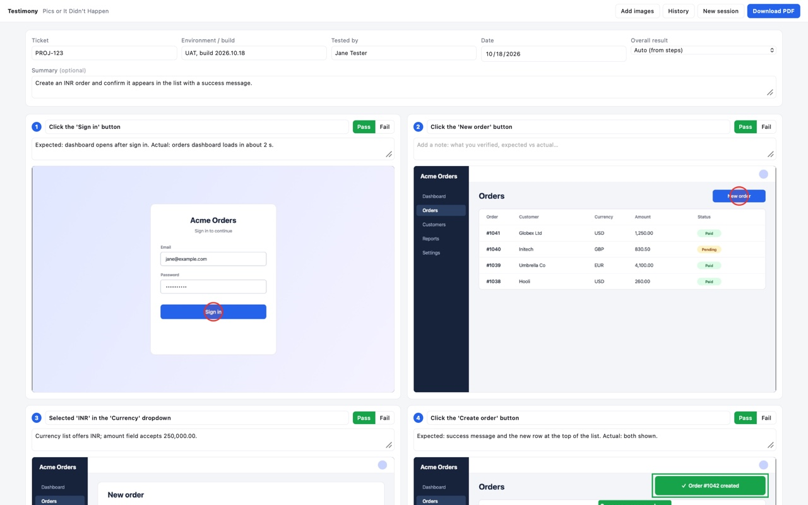
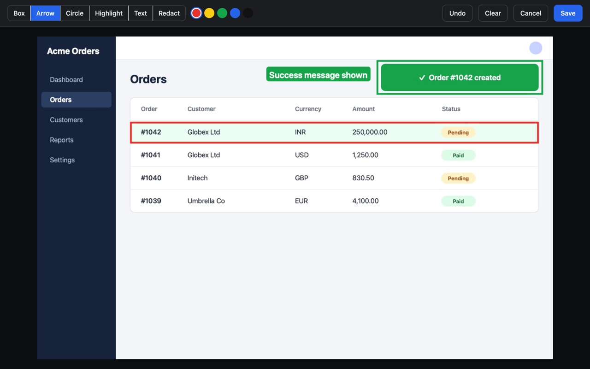
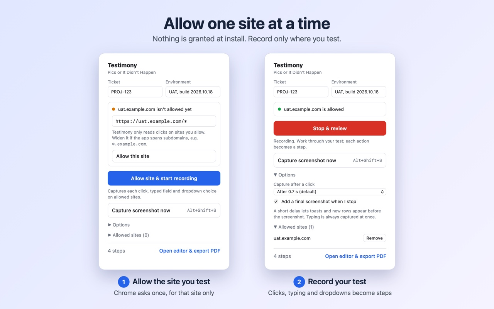
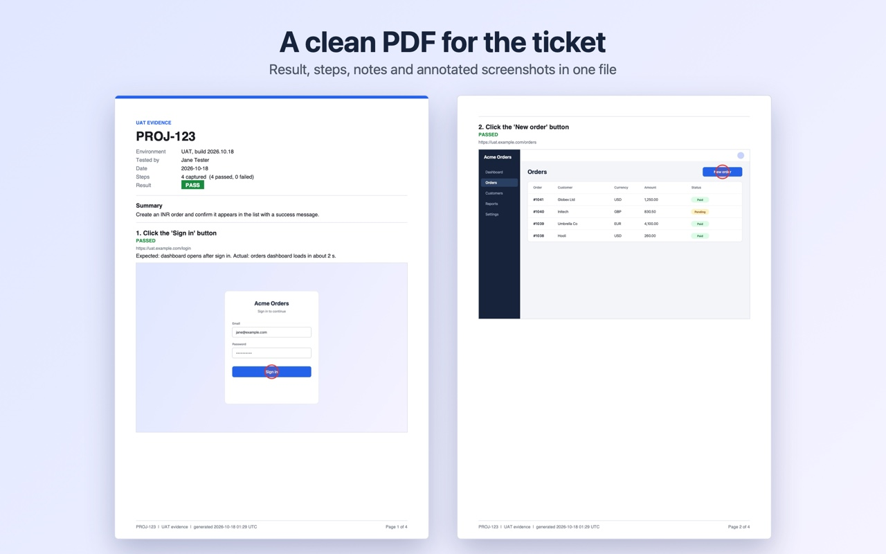
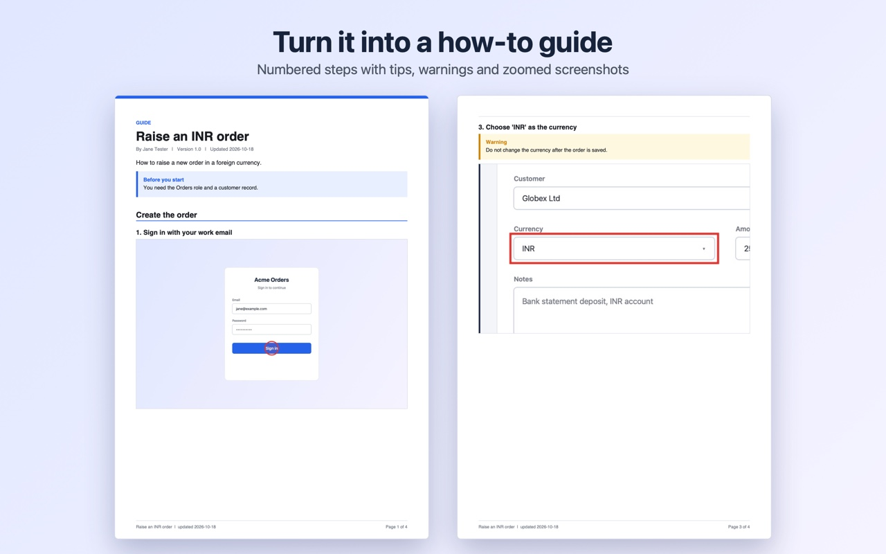

Pics or it didn't happen.
Testimony turns what you do in the browser into a document you can share. Click through a task, then download a step-by-step guide, or test evidence with Pass and Fail results, as a PDF.
Works in Chrome 102 or later. No account. Nothing leaves your computer.

One recording, two kinds of document
Choose a mode when you start, or switch later. Nothing is lost when you switch, so a recording can become either document.
Create a guide
A clean how-to or SOP. Give it a title and overview, then polish each instruction with tips, warnings and notes. Add section headings and text-only paragraphs, and zoom into the area that was clicked. The PDF is a numbered guide with no results.
Run a test
Evidence for a ticket. Record the ticket, environment and tester, mark each step Pass or Fail, and write what you expected and what actually happened. The PDF is an evidence report with the overall result.
Everything a sign-off or a how-to needs, nothing it doesn't
People lose hours taking screenshots, pasting them into documents and writing up what happened. Testimony does the capturing so you can do the work.
Records as you test
Every click, typed field and dropdown choice becomes a step with a screenshot, named for you: "Click the 'Save' button", "Selected 'INR' in the 'Currency' dropdown".
Captures the result
Screenshots are taken just after each action, so the success message or new table row is in the picture. A final screenshot is added when you stop.
Annotate and redact
Draw boxes, arrows, circles, highlights and text labels in five colours. Black out anything sensitive before you share.
Notes, Pass and Fail
Write what you expected and what you saw. Mark each step Pass or Fail, and the overall result is worked out for you.
Follows new tabs
Payment pop-ups and links that open in a new tab are part of the recording, labelled Tab 1, Tab 2 and so on. You are warned if a tab is not being recorded.
History you can trust
Starting a new session saves the old one. The last five sessions are kept, and each can be restored or exported again.
How it works
From first click to finished PDF in three steps.
Allow your test site
Enter the ticket and environment, then press Allow site and start recording. Chrome asks you once, for that site only.
Test as normal
Work through your scenario. Each action is captured as a step with a screenshot and a marker where you clicked.
Review and download
Press Stop, add notes, mark Pass or Fail, annotate if needed, and download one PDF to attach to your ticket.
See it in action
Screenshots use demo data.
Annotate what matters
Circle the result, box the row, label the message. Redact anything private. Your marks are baked into the PDF.

One site at a time
Nothing is granted when you install. You approve each site yourself, see what is allowed, and remove it whenever you like.

A clean PDF for the ticket
Ticket, environment, tester, date, overall result and summary up front, then every step with its screenshot, note and status.

Or turn it into a guide
The same recording becomes a how-to. Numbered steps, tips and warnings, and a zoom on the part that matters, with no test results.

Private by design
Test sessions often touch real systems. Testimony is built so your screenshots never leave your computer.
Nothing is sent anywhere
No account, no server, no analytics. Screenshots, notes and history are stored in your browser only.
Never reads what you type
Only the name of a field is recorded, such as "Typed in the 'Email' field". The text you enter is not read or stored.
Only where you allow
It watches for clicks only on sites you approved, and only while you are recording. Remove a site at any time.
Questions
Short answers to the common ones.
Does Testimony send my screenshots anywhere?
No. Everything stays in your browser on your computer, and the extension makes no network requests. You choose where the PDF goes.
Why does it ask for permission for each site?
So it can only see the sites you are testing. Chrome shows the request once per site, and you can remove a site from the popup at any time.
Does it record what I type into fields?
No. It records that you typed in a named field, never the text. Screenshots do show what is on screen, so use the redact tool before sharing a PDF if a screen contains sensitive information.
What is the difference between a guide and a test run?
A guide is a how-to for other people: instructions, tips and warnings, with no results. A test run is evidence for a ticket: environment, Pass or Fail for each step, and expected against actual results. You can switch a recording between them at any time.
Where do I use the PDF?
Anywhere that accepts a file. Attach test evidence to a Jira or other ticket or send it to a stakeholder as sign-off. Publish a guide in your wiki, intranet or onboarding pack.
Which browsers does it support?
Google Chrome 102 or later.
Can I change the keyboard shortcuts?
Yes, at chrome://extensions/shortcuts. The defaults are Alt+Shift+S to capture a screenshot and Alt+Shift+R to stop or start recording.
About the author
Testimony is built and maintained by Yashwanth Reddy. It started as a way to make UAT evidence quicker to capture and easier to trust.
Find out more about the author at kyashwanthreddy.co.in.
Found a bug or have an idea? Open an issue on GitHub.
Enjoying Testimony?
If it saves you time and you would like to say thanks, you can buy me a coffee. It is entirely optional, and Testimony works the same either way.
Buy me a coffee